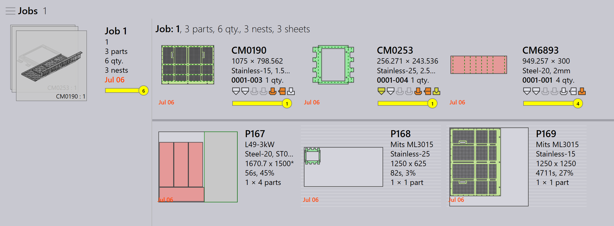
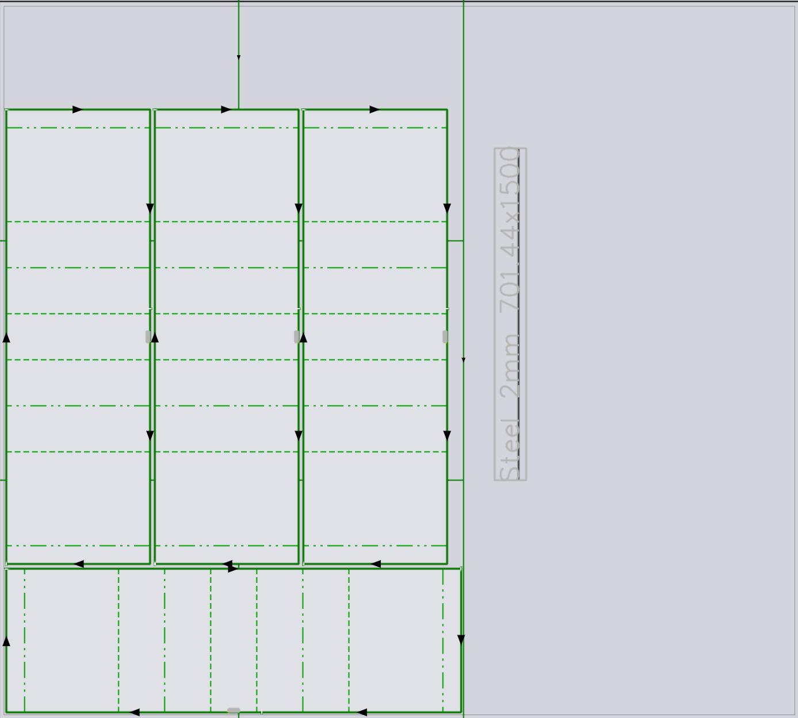

Automatická správa zvyškov
Povoliť zvyšok
TruSmartCAM podporuje automatizované vytváranie zvyškových hárkov z rozvrhnutia počas ukladania. Táto funkcia je dostupná iba so strojmi TecZone Laser.
-
Kliknite na závod → Stroje → Predvolené nastavenia stroja… → Skeleton cuts.
-
Vyberte možnosť Slice Sheet Skeleton & Create Remainder Sheet na povolenie tejto funkcie.
Keď je povolená, zostávajúca oblasť uloženého hárka je rozrezaná na zvyškové hárky na základe priradenej minimálnej hodnoty zvyškového hárka v X & Y.

Konfigurovať automatický zvyšok
-
Kliknite na závod → nastavenia → Zákazka.
-
Vyberte Aktualizácia inventára tabúľ pri (ne)povolení rozmiestnenia a Automatizujte správu zvyšných zásob.

Automatický zvyšok
Keď ukladáte diely, ak zostávajúca oblasť hárka spĺňa minimálnu hodnotu hárka X & Y, TruSmartCAM automaticky vytvorí zvyškový hárok zo zostávajúceho priestoru.
-
V zobrazení Job Nest sú hniezda, ktoré majú zvyškové hárky, zobrazené so zeleným obrysovým okrajom a sivým pozadím.

-
Dvojitým kliknutím na hniezdo otvorte stránku podrobností hniezda. Zobrazí sa informácia o zvyškovom hárku s veľkosťou zvyškového hárka, množstvom a plochou.

-
Kliknite pravým tlačidlom na hniezdo a vyberte Edit na otvorenie v TecZone. Hniezdo zobrazuje rezné línie medzi dielmi a rezné línie kostry spolu s vyrytými rozmermi zvyšku. (Materiál, hrúbka a veľkosť zvyšku).
Vyrytie rozmeru zvyšku Mark pomáha operátorovi vybrať hárok bez merania, čo uľahčuje jeho použitie v budúcich hniezdach.

Keď kliknete na Označiť ako ukončené…, zvyškový hárok je zobrazený so zelenou fajočkou, čo znamená, že hniezdo je dokončené. Čiastočne tónovaná štvorcová ikona označuje, že zvyškový hárok je vytvorený a aktualizovaný v inventári hárkov.

Databáza hárkov je aktualizovaná s veľkosťou a množstvom zvyškového hárka, ktorý je identifikovaný symbolom hviezdičky (*) na konci veľkosti hárka. Zvyškové hárky majú zelený okraj.

Automatické plánovanie alebo interaktívne plánovanie práce považuje zvyškové hárky za vysokú prioritu v pláne hniezda, čím sa zabezpečí, že budú použité ako prvé, aby sa udržala výrobná hala bez nepoužitých zvyškov.